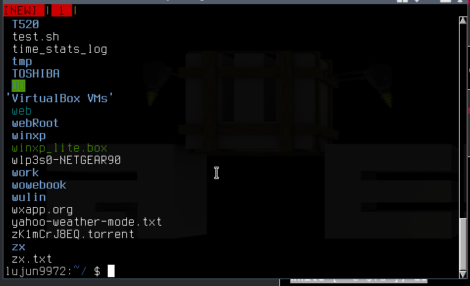

实现shell版的pv
从 https://blogs.oracle.com/linux/solving-problems-with-proc-v2 上看到的。
pv 能够显示数据处理的进度，非常神奇。而借助 /proc/$pid/fdinfo/$fd 我们能够用 shell 实现类似的功能。
我们都知道在 /proc/$pid/fd/ 中可以察看各个进程打开的文件描述符实际指向的文件，
而今天我才知道，原来在 /proc/$pid/fdinfo/ 目录下我们还能查看各个文件描述符的状态信息
for fdinfo in /proc/$(pgrep emacs)/fdinfo/* do echo ---------------${fdinfo}---------------- cat ${fdinfo} done |head -n 20
---------------/proc/1301/fdinfo/0---------------- pos: 0 flags: 0100000 mnt_id: 23 ---------------/proc/1301/fdinfo/1---------------- pos: 0 flags: 02 mnt_id: 9 ---------------/proc/1301/fdinfo/10---------------- pos: 184 flags: 0100001 mnt_id: 26 ---------------/proc/1301/fdinfo/11---------------- pos: 0 flags: 0100002 mnt_id: 26 lock: 1: POSIX ADVISORY WRITE 1301 00:17:2899622 0 EOF ---------------/proc/1301/fdinfo/12---------------- pos: 0 flags: 0100001
这些信息的意义可以通过 man 5 proc 来获得，其中 pos 表示的是文件的偏移位置。
因此我们可以实现一个简陋的pv
#!/usr/bin/env bash file="$1" cat <"${file}" & # 文件内容输出到stdout,这样方便通过管道传递出去. pid=$! fd=/proc/${pid}/fd/0 fdinfo=/proc/${pid}/fdinfo/0 size=$(stat --format=%s "${file}") # 获取文件的总大小 while [ -e ${fd} ]; do progress=$(cat ${fdinfo} | grep ^pos | awk '{print $2}') # 获取偏移量 echo $((100*${progress} / ${size})) # 计算百分比 sleep 0.1 done | dialog --gauge "Progress reading ${file}" 7 100 >&2 # 进度条输出到stdout
效果如下图所示:
